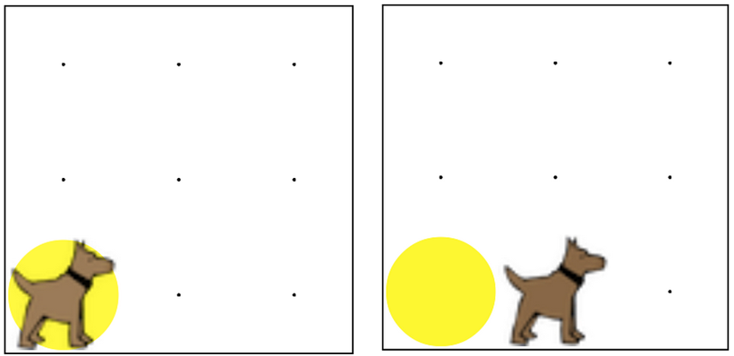

If there is a ball in the first spot, move once.
Otherwise, put a ball down and then move once.
Karel should end up on the second column in the first row,
and there should be a ball at 1, 1.
如果有一個球在第一點，移動一次。否則，把一場球下來，然後移動一次。
卡雷爾應該結束了在第一行第二列中，並且應該有一個球1,1。

if (condition) { 如果 (條件) {
//code that will run if the condition is true
//在此條件為正確的情況下，將會執行的程式碼
}
if(frontIsClear()){ 如果(前方無阻礙物()){
move(); 移動();
}
frontIsClear()
前方無障礙物()
leftIsClear()
左方無障礙物()
rightIsClear()
右方無障礙物()
frontIsBlocked()
前方有障礙物()
leftIsBlocked()
左方有障礙物()
rightIsBlocked()
右方有障礙物()
facingNorth()
面向北方()
facingSouth()
面向南方()
facingEast()
面向東方()
facingWest()
面向西方()
notFacingNorth()
不面向北方()
notFacingSouth()
不面向南方()
notFacingEast()
不面向東方()
notFacingWest()
不面向西方()
ballsPresent()
有球()
noBallsPresent()
沒有球 ()